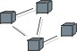

Artifacts >
Artifacts >
 Analysis & Design Artifact Set >
Analysis & Design Artifact Set >
 {More Analysis & Design Artifacts} >
Deployment Model
{More Analysis & Design Artifacts} >
Deployment Model
Artifacts >
Analysis & Design Artifact Set >
{More Analysis & Design Artifacts} >
Deployment Model
Artifact:
| ||||||||||||||||||||||||||||||
 Deployment Model |
The Deployment Model shows the configuration of processing nodes at run-time, the communication links between them, and the component instances and objects that reside on them. |
| Role: | Software Architect |
| More information: | |
| Input to Activities: | Output from Activities: |
The purpose of the Deployment Model is to capture the configuration of processing elements, and the connections between processing elements, in the system. The Deployment Model consists of one or more nodes (processing elements with at least one processor, memory, and possibly other devices), devices (stereotyped nodes with no processing capability at the modeled level of abstraction), and connectors, between nodes, and between nodes and devices. The Deployment Model also maps processes on to these processing elements, allowing the distribution of behavior across nodes to be represented.
The following roles use the Deployment Model:
|
Property Name |
Brief Description |
UML Representation |
| Introduction | A textual description that serves as a brief introduction to the model. | Tagged value, of type "short text". |
| Nodes | Processing elements in the system.
Nodes may have the following properties:
|
node |
| Devices | Physical devices, having no processing
capability (at the modeled level of abstraction), that support the processor
nodes.
Devices may have the following properties:
|
stereotyped node |
| Connectors | Connections between nodes, and between
nodes and devices.
Connectors may have associated information regarding the capacity or bandwidth of the connector. |
association, possibly stereotyped, to model different kinds of connectors, for example. |
| Diagrams | The diagrams in the model, owned by the packages. |
The Deployment Model is typically depicted in a diagram such as the one shown below:

In the inception phase, the model will be produced at a conceptual level - if the deployment environment does not already exist - as part of architectural synthesis, when the software architect is trying to identify at least one viable architecture that will meet requirements - particularly non-functional requirements. The Project Manager will also use the Deployment Model in estimating costs for the Business Case.
However, if the system will be deployed into an environment that exists already, that environment will be documented. The key elements to captured are:
In the elaboration phase, the Deployment Model will be refined to a specification level, allowing the software architect to predict performance with confidence, before finally taking the model to the physical level, where it specifies the actual hardware and model numbers to be used, and becomes a plan for the acquisition, installation and maintenance of the system.
If the deployment environment already exists, it will be examined to determine whether it is capable of supporting the new capabilities of the system being developed. If changes are needed to the deployment environment, these are identified in this phase.
If the deployment environment does not yet exist, the numbers, types and configurations of nodes and the connection between nodes needed to support the architecture will be defined. Key deployment aspects of the architecture are examined and addressed, including:
The allocation of components to nodes, or deployment units to nodes, is updated if or when the components change.
If the deployment environment does not yet exist, there is typically a hardware procurement and installation effort running in parallel to the software development effort. It is recommended that commitment to final hardware purchase be delayed as long as possible, to mitigate the performance risk (that the deployed software does demonstrate acceptable capacity, response time or throughput characteristics), and to take advantage of technology and price/performance improvements. If performance issues arise during construction, the software architect ideally should have the freedom to modify the Deployment Model as well as the architecture of the software itself, when addressing these issues.
The deployment environment is readied for the system to be installed. One or more test/trial deployments occur as the software undergoes one or more beta tests. The software is eventually transitioned into the deployment environment.
The software architect is responsible for the Deployment Model.
The Deployment Model is optional for single-processor systems, or simple systems with little or no distribution of processing.
It is mandatory for systems with complex network or processor configurations.
|
Rational Unified
Process
|